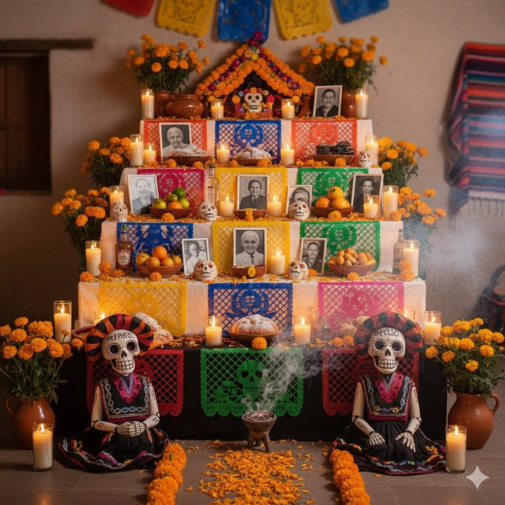
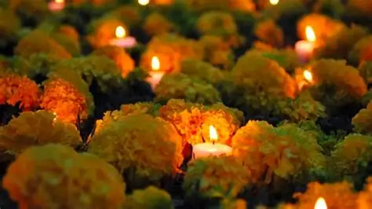
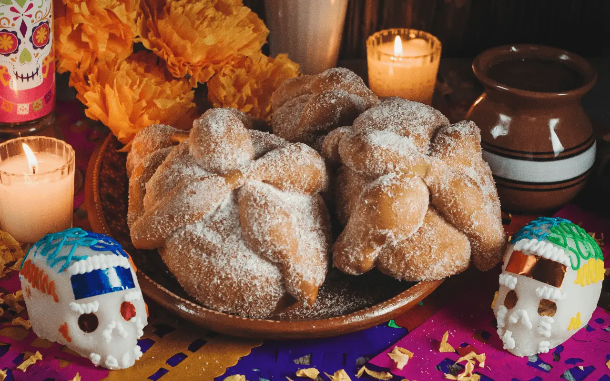

“La muerte no es el final, es el comienzo de un nuevo camino. Que la luz de las velas y el aroma del cempasúchil guíen a nuestros seres queridos a casa.”
Se dedicada a recordar y honrar a los seres queridos que han
fallecido. Las familias preparan ofrendas con fotografías,
veladoras, flores de cempasúchil y alimentos para recordar
a quienes forman parte de su historia
Esta celebración combina costumbres indígenas y tradiciones
religiosas, y se caracteriza por sus colores, aromas y símbolos.
Su objetivo es mantener viva la memoria de nuestros seres queridos
y transmitir la cultura mexicana de generación en generación.
¿Cuándo se celebra?
1 de noviembre: tradicionalmente se recuerda a los niños fallecidos.
2 de noviembre: tradicionalmente se honra a los adultos fallecidos.
Importancia cultural
Esta tradición representa el amor, el recuerdo y la unión
familiar. Combina costumbres indígenas con elementos
religiosos que se incorporaron a lo largo de la historia.
El Día de Muertos es una festividad que refleja la visión
Las costumbres pueden variar según la región y las
tradiciones de cada familia. En algunos lugares, los
preparativos comienzan desde finales de octubre.
🕯️ 2. La ofrenda y sus elementos

La ofrenda es un altar preparado para recordar a los seres queridos. Cada elemento tiene un significado relacionado con las creencias y costumbres familiares.
Fotografías: recuerdan a los difuntos.
Veladoras: simbolizan la luz y la guía.
Agua: representa la pureza y la sed.
Sal: se relaciona con la purificación.
Cempasúchil: adorna el altar y simboliza el camino de los difuntos.
Comida: recuerda los gustos de los seres queridos.
Papel picado: representa el aire.
Copal: se utiliza por su significado ceremonial.
🌼 3. Símbolos y gastronomía tradicional

Flor de cempasúchil

Pan de muertoCalaveritas de azúcar
Flores de cempasúchil
Es una flor de color naranja muy representativa de las ofrendas y los panteones.
Copal
Es una resina aromática utilizada en ceremonias y tradiciones.
Pan de muerto
Es un pan tradicional que suele decorarse con figuras de huesos y azúcar.
Calaveritas de azúcar
Son figuras decorativas con forma de calavera, representativas de esta celebración.
Otros alimentos
También se colocan frutas, tamales, chocolate, bebidas y platillos favoritos de cada familia.
📜 4. Historia y evolución de la celebración
El Día de Muertos es una tradición mexicana que comenzó hace muchos años, desde la época de las antiguas culturas
indígenas, como los mexicas, los mayas y los purépechas. Para estos pueblos, la muerte era parte del ciclo de la vida
y no significaba que todo terminara. Por eso, realizaban ceremonias y rituales para recordar y honrar a sus seres queridos
que habían fallecido.Cuando los españoles llegaron a México, las costumbres indígenas se mezclaron con las tradiciones católicas,
como el Día de Todos los Santos y el Día de los Fieles Difuntos, que se celebran el 1 y 2 de noviembre. Con el paso del tiempo,
estas costumbres se fueron combinando hasta dar forma a la celebración que conocemos actualmente como el Día de Muertos.
A lo largo de los años, esta tradición fue cambiando y se fueron incorporando diferentes elementos que hoy son muy importantes. Por ejemplo,
las familias comenzaron a preparar ofrendas con fotografías, veladoras, flores de cempasúchil, agua, sal, comida y pan de muerto. Cada uno
de estos elementos tiene un significado especial y ayuda a recordar a las personas fallecidas. También se hizo costumbre visitar los panteones,
limpiar las tumbas y decorarlas con flores para pasar un momento recordando a los seres queridos.
Con el tiempo, el Día de Muertos también comenzó a celebrarse con actividades culturales, como desfiles, exposiciones, concursos de disfraces y
decoraciones de calaveras. Personajes como La Catrina se volvieron muy populares y ahora son una parte importante de la imagen de esta festividad.
Además, cada región de México tiene sus propias formas de celebrarlo, por lo que las costumbres pueden ser diferentes dependiendo del lugar.
En la actualidad, el Día de Muertos es una de las tradiciones más representativas de México. En 2008, la UNESCO la reconoció como Patrimonio Cultural
Inmaterial de la Humanidad por su importancia histórica y cultural. Aunque la celebración ha cambiado con los años, su propósito sigue siendo el mismo:
recordar con cariño a quienes ya no están con nosotros, valorar los momentos que compartimos con ellos y mantener vivas nuestras tradiciones para que las
nuevas generaciones también las conozcan.
5.Calaveritas liteararias y la catrina
¿Que son las Calaveritas liteararias
Las calaveritas son parte esencial de la tradición literaria de México. Se trata de composiciones poéticas breves
en las que prima una visión cómica y satírica de la muerte.
Surgieron durante la época colonial
se popularizaron durante el siglo XIX cuando se publicaban en periódicos y servían como medio de crítica social.
Debido a que son epitafios, se asociaron rápidamente al Día de los Muertos. Por ello, se escriben principalmente durante la celebración, el 1 y 2 de noviembre.
En la actualidad las calaveritas no sólo se refieren a los muertos, sino que tratan sobre personajes famosos de la cultura popular.
Caracteristicas de las calaveritas liteararias
Generalmente se escriben en verso y en rima consonante, con estrofas de cuatro versos (cuartetas) en octosílabo.
Son principalmente humorísticas y sarcásticas, usando la muerte como tema central.
Suelen hacer burla o sátira de la persona a la que están dedicadas.
Aunque tienen un tono humorístico, muchas calaveritas contienen una crítica social.
Este arte popular refleja muy bien la visión que tiene el pueblo mexicano sobre la muerte
pues se entiende como un proceso natural que es parte de la vida y que se puede prestar para el humor.
La muerte es tratada como un personaje cotidiano que "se lleva" a las personas. Por ello, puede ser juguetona, burlo
Usan expresiones propias del español y un tono informal, accesible para la mayoría de la población.
Se han asociado a la imagen de la Catrina del famoso caricaturista José Guadalupe Posada que Diego Rivera popularizó.
Así, se acompañan de esta imagen que en México se convirtió en un símbolo de la actitud irreverente hacia la muerte.
Origen
El origen de las calaveritas literarias se remonta al siglo XIX.
Se cree que fueron inspiradas por las tradiciones coloniales de los "epitafios burlescos",
donde se escribían versos cómicos en relación con la muerte de personajes de la época.
Así, fueron publicadas por primera vez en 1849 en el periódico El Socialista de Guadalajara.
Con los años han pasado a formar parte del imaginario social y sirven para referirse de forma irónica a personajes y temas de la actualidad .
Ejemplo
¿Quién es la catrina?
La Catrina es uno de los personajes más conocidos y representativos del Día de Muertos en México.
Se caracteriza por ser una calavera vestida con ropa elegante, un sombrero grande y adornos que
representan la moda de épocas antiguas. Este personaje simboliza la muerte y nos recuerda que todas
las personas somos iguales ante ella, sin importar nuestra riqueza, apariencia o posición social.
Su origen se encuentra en el trabajo del ilustrador mexicano José Guadalupe Posada, quien creó una calavera
conocida como *La Calavera Garbancera* a principios del siglo XX. Posteriormente, el famoso pintor Diego Rivera
la representó en su mural *Sueño de una tarde dominical en la Alameda Central*, donde apareció con el nombre de
La Catrina y una vestimenta más elegante.Con el paso del tiempo, La Catrina se convirtió en un símbolo importante
de la cultura mexicana y de la forma en que nuestro país representa la muerte. Actualmente, aparece en ofrendas, pinturas,
disfraces, artesanías y decoraciones durante el Día de Muertos. Muchas personas también se maquillan como ella, utilizando
diseños de calaveras con flores y colores llamativos.
La Catrina no representa solamente la muerte, sino también la identidad, el arte y las tradiciones de México. Su imagen nos
invita a reflexionar sobre la vida, a recordar a nuestros seres queridos y a valorar nuestras costumbres. Gracias a su historia
y significado, continúa siendo uno de los símbolos más importantes de esta celebración mexicana.


 ¿Quién es la catrina?
¿Quién es la catrina?